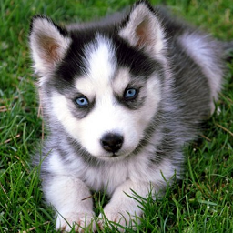

- 中文学名：西伯利亚雪橇犬
- 别 称：哈士奇、二哈、撒手没、拆迁办主任
- 分布区域：西伯利亚东北部，格陵兰南部
- 原产地 ：俄罗斯西伯利亚地区
- 体 型：中型犬
- 适合食物：狗粮
- 寿 命：10年以上
- 体 高： 雄犬肩高53-58CM，雌犬51-56CM
- 体 重: 雄犬20-27公斤,雌犬16-23公斤
- 智商排名： 45名

- 中文学名：折耳猫
- 别 称：苏格兰折耳猫
- 种： 猫
- 亚 种：苏格兰折耳猫
- 英文名：Scottish Fold
- 原产地： 英国苏格兰
- 原产地：英国苏格兰
- 适宜用途：伴侣
- 中文学名：西巴犬
- 别 称：doge
- 分布区域： 日本、中国、美国
- 分布区域：日本、中国、美国
- 体 型：小型犬
- 用 途：工作犬、伴侣犬
- 性 格： 招人喜爱，温和 ，警觉，独立
- 英文名： Shiba Inu、Beilika
- 平均寿命: 10-12岁